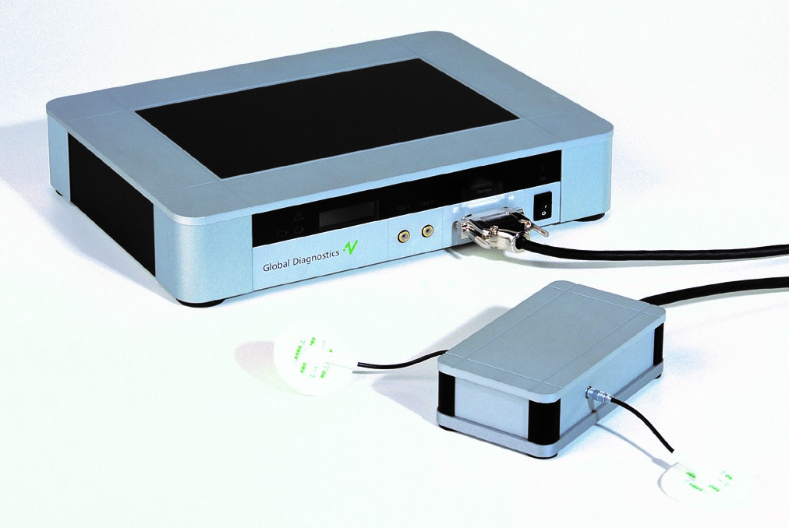
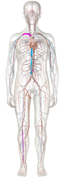
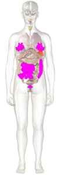
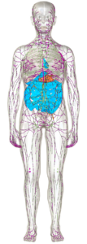
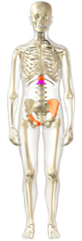
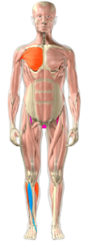
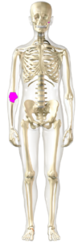

Holistische Bodyscan
We zoeken pas hulp als er klachten ontstaan maar preventie is de sleutel voor een goede gezondheid, om disbalansen vroegtijdig op te sporen voordat er klachten ontstaan.
Holistisch is terug te leiden naar het woord Holos, wat betekent geheel, allesomvattend, alles is met elkaar verbonden en beïnvloed elkaar. Bij de bodyscan kijken we dus naar het geheel, naar eenheid; fysiek, mentaal, emotioneel energetisch en spiritueel in het vitale veld.


De Vitalfeld technologie van Vitatec is ontwikkeld door de Duitse fysicus Dr. Siegfried Kiontke. Hij heeft het systeem ontwikkeld waarbij energetische gevolgen en fysiologische veranderingen gemeten worden op 612 lichaamsfuncties in 13 lichaamssystemen op celniveau. In slechts 8 minuten met 2 elektroden op de enkels of de polsen wordt het lichaam gemeten op disbalansen. Wat is er niet in balans en wat heeft er aandacht nodig.
De meting
Na de meting wordt alles overzichtelijk weergegeven op het computerscherm. De uitkomst ga ik samen met de client doornemen. U krijgt een duidelijk beeld in 3D waar de disbalansen zich in het lichaam bevinden in organen, hart en bloedvaten, lymfe, spieren, gewrichten en het skelet.
Tevens is er aandacht voor;
- Disbalansen
- Energie
- Herstelvermogen
- Slijmvliezen
- Afvalstoffen en verzuring
- Laaggradige ontstekingen
- Immuunsysteem
- Stress
- Organen
- Hormonen
- Allergieën
- Bacteriën/virussen/schimmels/parasieten
- Tekorten mineralen/vitamines
- Spijsvertering
- Emoties
De behandeling
Op basis van deze meting kan er een behandelplan worden opgezet.
De behandeling wordt uitgevoerd met dezelfde apparatuur d.m.v. 2 elektroden. Door electromagnetische frequenties worden lichaamsfuncties en systemen geactiveerd om in balans te komen, schimmels, virussen, bacteriën en parasieten geëlimineerd, het ontgiftingsproces wordt opgang gebracht en het zelfherstellend vermogen geactiveerd.
Zowel de meting als de behandeling zijn pijnloos, lichte trillingen kunnen ervaren worden.
Het begin van een genezingsproces kan reacties veroorzaken, dat is positief, het lichaam wordt als eerste geactiveerd om afvalstoffen af te voeren, wat kan leiden tot lichte vermoeidheid in de eerste dagen.






Tarieven
Eerste Consult
1 uur en 30 min- Kennismakingsgesprek
- Bodyscan meting
- Analyse
- Behandeling
- Advies leeftstijl en/of supplementen
Vervolg Consult
1 uur- Bodyscan meting
- Analyse
- Behandeling
Vervolg Behandeling
30 min- Behandeling
Pakket
3 consulten- Kennismakingsgesprek
- 3 x Bodyscan meting
- 3 x Analyse
- 3 x Behandeling
- Advies leeftstijl en/of supplementen
Op verzoek kom ik ook bij drogisterijen en bedrijven, prijzen zijn op aanvraag.